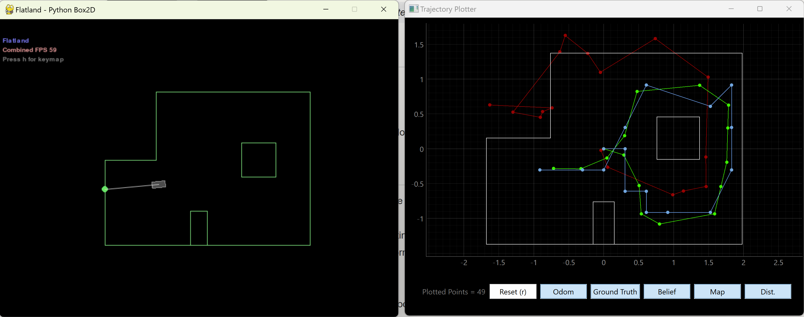

Lab 10 Bayes Filter Simulation
The goal of this lab was to use Bayes Filter and odometry to implement grid localization..
About the Bayes Filter
The Bayes filter takes in control input, sensor measurements, and "belief" of where the robot is to determines the robot position on a pre-determined grid. For any given location, there is a probability that the robot is actually there based on it's previous location as well as the ideal control action it would take to get to said new location. Similar to the Kalman filter (which, if anything the KF is a subset of Bayes), the Bayes filter has both a prediction step and an update step once data has come in (prior vs posterior).

Compute_Control
The robots motions/actions are predicted using odometry. This essentially splits any movement into the sum of three smaller movements. First, a rotation of the robot in the direction of its final destination. Next, a translation to that new location. And lastly, a second rotation to correct the robots orientation. We calculate this with the function compute_control, which takes in the robots current and previous poses in as an input. Each pose is actually a tuplet of (x,y,theta).
Odom_Motion_Model
The above function just calculated the three relative motions needed to go between two points. For the actual odometry motion model, two possible paths must be compared: the "actual" action the robot took, based on odometry readings, versus the "ideal" motions the robot would take based on it's previous states. For this code/model, we treat the ideal state as a Gaussian distribution, and compare the actual actions taken to determine a probability p(x'|x, u). Essentially, the ideal location of the robot x, given control u, is the mean or center of the gaussian distribution. We can then check the probability that the robot is actually at location x', and do this for each movement (rotation 1, translation, rotation 2). We assume each movement is an independent event.

Prediction_Step
The prediction step goes through every possible previous robot state, x_(t-1), and figures out the probability that the robot will be in some current state x_t, given the belief the robot was in the state x_(t-1) and a control action. We must check all 12 x grid locations, all 9 y locations, and all 18 discretized angles. The result of the prediction step is a new belief, bel_bar, which represents the predicted uncertainty that the robot is in the new location x_t. This function get's computationally expensive because it has to loop through every single location, so I added an if statement to ignore any previous location x_(t-1) with a belief of less than 0.0001. I increased this up to 0.001 and I think it did make my filter slightly faster.
Sensor_Model
Next came the sensor model, which defines the probability p(z|x). This function defines a gaussian distribution centered around the true observation and a predefined variance, loc.sensor_sigma. For 18 measurements (robot spins in a circle) it determines the likelihood of a specific measurement given the current state.
Update_Step
Finally came the update step. It takes the predicted belief, bel_bar, and updates it based on sensor values. To do this calculation you need to loop through all possible locations and run the sensor model function to determine the probability of getting the current measurement, and multiply it by the belief that you are at that grid location. After this, the final belief can be normalized and used to estimate position.
Simulation
Results are shown below.
The odometry model alone (red) is pretty terrible/inaccurate. However comparing the belief (blue) with the true location (green) shows that despite how bad the odometry is, the ultimate prediction from the Bayes filter converges pretty quickly and is quite accurate. It was most inaccurate atthe top right corner of the map, but was still able to correct itself and converge back very fast. It is also slightly less accurate at the center/origin of the grid, maybe due to symmetry. Overall, though, I think it performed very well.
Discussion
The Bayes filter is very powerful. It has a similar structure to the Kalman filter, but is more forgiving with the dynamics of the system since it does not require linear gaussian systems. I was able to simulate/estimate robot precision with high accuracy even with a fairly inaccurate odometry model, which shows how good the Bayes filter can be!